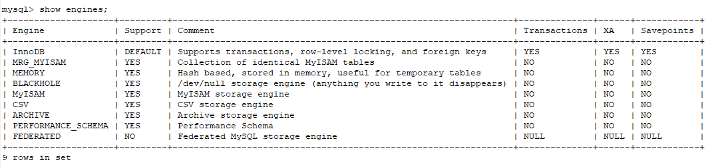
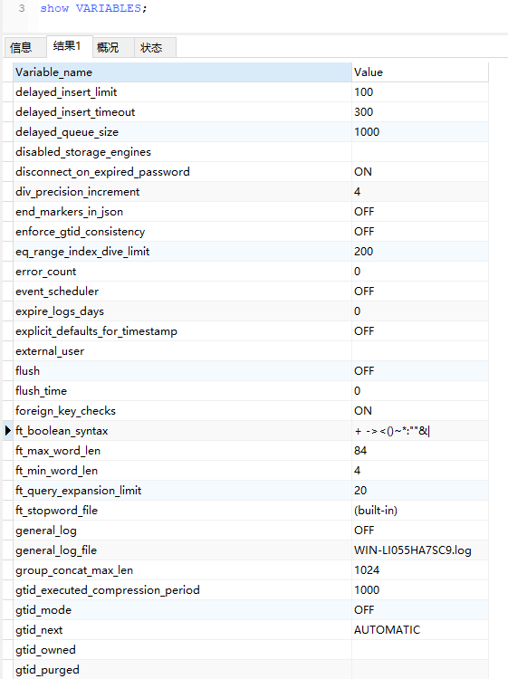
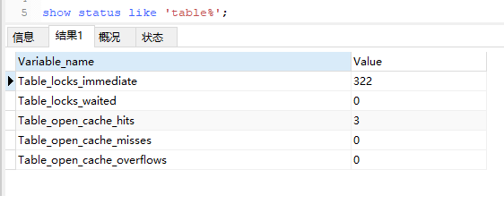
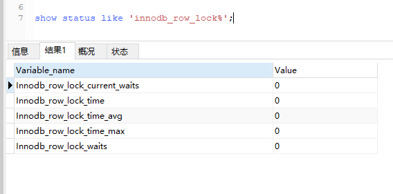

show engines命令
用于查看当前Mysql使用的数据库存储引擎。

show variables命令
用于查看当前Mysql的配置情况。

show status like ‘Table%’命令
用于查看当前表使用状态，有两个关键的字段：Table_locks_immediate为表立即释放锁的次数，Table_locks_waited为表等待释放锁的次数。

show status like ‘innodb_row_lock%’命令
用于查看行锁争夺情况。

lock table/unlock table命令
MyISAM数据库引擎加锁（解锁）操作。
InnoDB Monitors
可创建InnoDB Monitors来观察发生锁冲突的表、数据行等信息。
1 | CREATE TABLE innodb_monitor(a INT) ENGINE=INNODB; |
SELECT … LOCK IN SHARE MODE命令
用SELECT … IN SHARE MODE获得共享锁，主要用在需要数据依存关系时来确认某行记录是否存在，并确保没有人对这个记录进行UPDATE或者DELETE操作。
但是如果当前事务也需要对该记录进行更新操作，则很有可能造成死锁。
SELECT … FOR UPDATE命令
对于锁定行记录后需要进行更新操作的应用，应该使用SELECT… FOR UPDATE方式获得排他锁。
其他session可以查询，但是不能加共享锁。
InnoDB的行锁与表锁
当使用索引来检索数据时，就会使用到行级锁，否则，将会使用表级锁。
比如，SELECT …WHERE … FOR UPDATE语句，如果where后面使用的是索引，那么这条语句就是行锁，否则是表锁。
而且，假如另一个session的SELECT …WHERE … FOR UPDATE语句通过另一个索引找到对应行，那还是会等待锁。